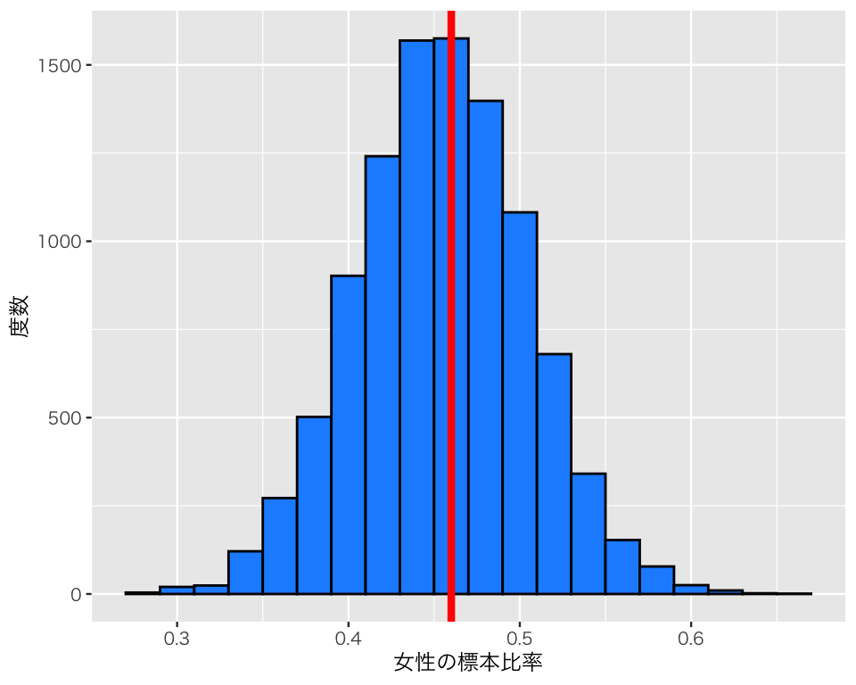

10 母集団と標本をシミュレーションで理解する
今回の目標
- 母集団と標本の違いを理解しよう！
- 母数（パラメタ）と統計量の違いを理解しよう！
10.1 準備
必要なパッケージを読み込む。
次に、日本語が正しく表示されるようにする。
## 図のなかで日本語を使えるようにする
## フォントの設定はお好みで
## （Unix/Linux ではIPAexフォントのインストールが必要かも）
library(fontregisterer)
if (.Platform$OS.type == "windows") { # Windows
my_font <- "Yu Gothic"
} else if (capabilities("aqua")) { # macOS
my_font <- "Hiragino Sans"
} else { # Unix/Linux
my_font <- "IPAexGothic"
}
theme_set(theme_gray(base_size = 9,
base_family = my_font))10.2 母集団と標本のシミュレーション
10.2.1 母集団を用意する
例として、女性4,600人、男性5,400人から成る母集団を考える。合計10,000人で、女性比率が0.46、男性比率は0.54である。これらは母集団の比率なので、母比率と呼ばれる。
この母集団 (population) をRで定義しよう。
総人口を確認する。
length(pop)[1] 10000男女の数を確認する。
table(pop)pop
female male
4600 5400 例題どおりの母集団が定義できた。
ここで、私たちは母比率を知らないと仮定しよう。 正しい母比率を調べるもっとも単純な方法は、1万人全員の性別を調べることである。しかし、1万人を調査するのは大変なので、1万人から100人だけを無作為に（ランダムに）選び、100人の性別を調べ、その結果を利用して母比率を推定することにする。
10.2.2 母集団から100人をランダムに選ぶ
上で定義した母集団から、ランダムに100人を抜き出してみよう。
sample() でランダムに100人抽出すればよい。同じ人物を2度以上抜き出すことがないよう、replace = FALSE で非復元抽出を指定する。また、標本サイズ \(N\) は繰り返し使うので、最初に定義しておく。
N <- 100
sample_1 <- sample(pop, size = N, replace = FALSE)取り出した\(N=100\)のサンプルで、男女の比率を調べてみよう。
table(sample_1) / Nsample_1
female male
0.49 0.51 この比率は標本（サンプル）の比率なので、標本比率と呼ばれる。 女性比率だけを調べる（女性比率がわかれば男性比率もわかるので）には、
sum(sample_1 == "female") / N[1] 0.49または、
mean(sample_1 == "female")[1] 0.49とすればよい。
もう一度、別の100人で調べてみよう（先ほどと同じ人物が選ばれる可能性はある）。
もう一度、別の100人で調べてみよう（先ほどと同じ人物が選ばれる可能性はある）。
このように、毎回異なる標本比率が得られる。標本から得られる統計量は、母数（この例題の場合は母比率）と必ずしも一致しないし、同じ方法を何度も繰り返すと異なる値が得られる。
1万人から100人を選ぶ方法は \(6.5 \times 10^{241}\) 通りあるので、全部の組み合わせを調べるのは不可能である。そこで、Rを使って10,000通りだけ調べてみよう。
まず、1万個の結果（女性の標本比率）を保存する容器（ベクトル, vector）を用意する。
res_1 <- rep(NA, 1e4) NA は欠測値（値がないこと）を表す。まだ結果を得ていないので、欠測値が1万個ある「空の」容器を用意した。
1e4 というのは、\(1 \times 10^4\) すなわち 10000 のことである。 この例のように、コンピュータでは桁が大きい数を e （プログラムによっては大文字の E）を用いて表すので覚えておこう。この e は自然対数の底（ネイピア数）ではないので注意。 Rでのネイピア数は exp(1) である。
確認のため、最初の10個分だけ表示してみよう。
res_1[1:10] [1] NA NA NA NA NA NA NA NA NA NAすべて NA である。
次に、forループ を使って標本抽出（サンプリング）と母比率の計算を1万回実行する。\(i\)番目の結果は、res_1 の \(i\)番目の値として保存する。res_1の\(i\) 番目は res_1[i] と書く。
これで、結果が res_1 に保存された。確認のため、最初の10個の結果を表示してみよう。
res_1[1 : 10] [1] 0.41 0.49 0.48 0.45 0.43 0.37 0.48 0.37 0.54 0.48さきほどは NA だったところに数値（標本比率）が保存されたことがわかる。
結果をヒストグラムにしてみよう。私たちは母比率を知っているので、母比率である0.46を赤い線で示す。
df1 <- tibble(sample = res_1)
hist1 <- ggplot(df1, aes(x = sample)) +
geom_histogram(binwidth = 0.02,
color = "black",
fill = "dodgerblue") +
geom_vline(xintercept = 0.46,
color = "red",
size = 1.5) +
labs(x = "女性の標本比率",
y = "度数")
plot(hist1)
ヒストグラムを見ると、一つひとつの標本比率は母比率よりも大きかったり、母比率よりも小さかったりすることがわかる。しかし、平均すると母比率に近い値を得ることができそうだ。
このヒストグラムからわかる通り、統計量は分布する（つまり、標本ごとにばらばらの値をとる）。このような標本ごとの分布を 標本分布 (sampling distribution) と呼ぶ（標本分布については、次のトピックで説明する）。
10.2.3 標準誤差 (standard error; SE)
標準誤差は、標本分布に現れる標準偏差（統計量のばらつき）なので、このシミュレーションで得られる標準誤差は、
sd(res_1)[1] 0.04951537である。
詳しくは次のトピックで説明するが、理論的には \[\mbox{SE} = \frac{母標準偏差}{\sqrt{標本サイズ}}\] なので、
になるはずであるが、シミュレーションなので実行する度に値が変わり、理論値に近づいたり離れたりする。
10.3 実習課題
標本サイズ \(N\) の値を変えて (N = 25, N = 400)、同様のシミュレーションを実行してみよう。
- ヒストグラムはどのように変化するだろうか。
- 標準誤差はどのように変化するだろうか。